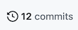
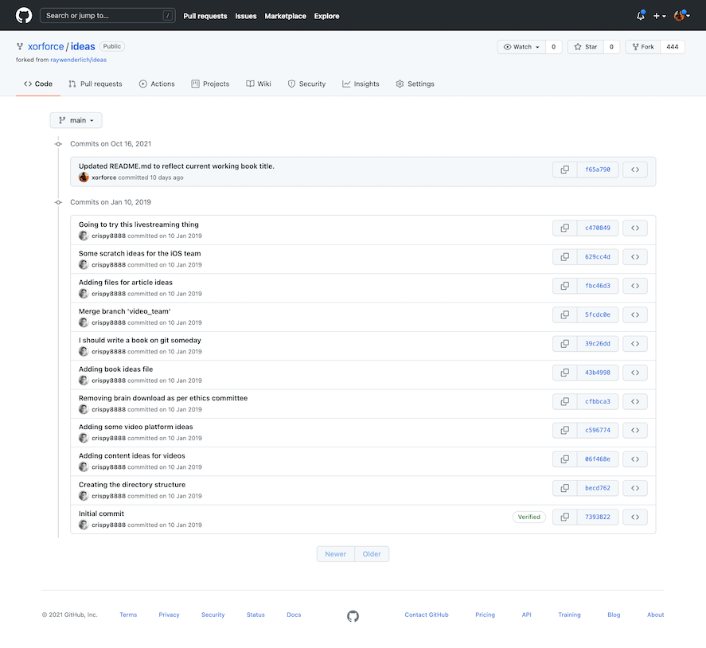
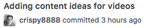

3.Committing Your Changes¶
The previous chapter showed you how to clone remote repositories down to your local system. At this point, you’re ready to start making changes to your repository. That’s great!
But, clearly, just making the changes to your local files isn’t all you need to do. You’ll need to stage the changes to your files, so that Git knows about the changes. Once you’re done making your changes, you’ll need to tell Git that you want to commit those changes into the repository.
What is a commit?¶
As you’ve probably guessed by now, a Git repo is more than a collection of files; there’s quite a bit going on beneath the surface to track the various states of your changes and, even more importantly, what to do with those changes.
To start, head back to the homepage for your forked repository at https://github.com/[your-username]/ideas, and find the little “12 commits” link at the top of the repository page:

Note
If you didn’t complete the challenge for the last chapter, then go create a fork of https://github.com/raywenderlich/ideas and clone it to your local workstation.
Click that link, and you’ll see a bit of the history of this repository:

Each of those entries is a commit, which is essentially a snapshot of the particular state of the set of files in the repository at a point in time.
Generally, a commit represents some logical update to your collection of files. Imagine that you’re adding new items to your ideas lists, and you’ve added as many as you can think of. You’d like to capture that bit of work as a commit into your repository.
The state of the repository before you began those updates — your starting point, in effect — is the parent commit. After you commit your changes — which is the diff — that next commit would be the child commit. The diagram below explains this a little more:
In this example, I’ve added new text to a file between commits. The parent commit is the left-hand file, and the child commit is the right-hand file. The diff between them are the changes I made to a single file:
And a diff doesn’t just have to be additions to files; creating new content, modifying content and deleting content are other common changes that you’ll make to the files in your repository.
In Git, there are a few steps between the act of changing a file and creating a commit. This may seem like a bit of a heavy approach, at first, but, as you move through building up your commits, you’ll see how each step helps create a workflow that keeps you in tune with the files in your repository and what’s happened to them.
The easiest way to understand the process of building up commits is to actually create one. You’ll create a change to a file, see how Git acknowledges that change, how to stage that change, and, finally, how to commit that change to the repository.
Starting with a change¶
Open your terminal program and navigate to the ideas repository; in my case, I’ve put it inside of the GitApprentice directory. This should be the clone of the forked repository that you created in the previous chapter.
Note: If you missed completing the challenge at the end of the Chapter 2, go back now and follow the challenge solution so that you have a local clone of the forkedideasrepository to work with.
Assume that you want to add more ideas to the books file. Open books/book_ideas.md in any plaintext editor. I like to use nano since it’s quick and easy, and I don’t need to remember any obscure commands to use it.
Add a line to the end of the file to capture a new book idea: “Care and feeding of developers.” Take care to follow the same format as the other entries. Your file should look like this:
# Ideas for new book projects
- [ ] Hotubbing by tutorials
- [x] Advanced debugging and reverse engineering
- [ ] Animal husbandry by tutorials
- [ ] Beginning tree surgery
- [ ] CVS by tutorials
- [ ] Fortran for fun and profit
- [x] RxSwift by tutorials
- [ ] Mastering git
- [ ] Care and feeding of developers
When you’re done, save your work and return to your terminal program.
In the background, Git is watching what you’re doing. Don’t believe me? Execute the following command in the ideas directory to see that Git knows what you’ve done, here:
git status
git status shows you the current state of your working tree — that is, the collection of files in your directory that you’re working on. In your case, the working tree is everything inside your ideas directory.
You should see the following output:
~/GitApprentice/ideas $ git status
On branch main
Your branch is up to date with 'origin/main'.
Changes not staged for commit:
(use "git add <file>..." to update what will be committed)
(use "git restore <file>..." to discard changes in working directory)
modified: books/book_ideas.md
no changes added to commit (use "git add" and/or "git commit -a")
Ah, there’s the file you just changed: books/book_ideas.md. Git knows that you’ve modified it… but what does it mean when Git says, Changes not staged for commit?
It’s time for a short diversion to look at the various states of your files in Git. Building up a mental model of the various states of Git will go a long way to understanding what Git is doing… especially when Git does something that you don’t quite understand.
Working trees and staging areas¶
The working copy or working tree or working directory (language is great, there’s always more than one name for something) is the collection of project files on your disk that you work with and modify directly, just as you did in books/book_ideas.md above.
Git thinks about the files in your working tree as being in three distinct states:
- Unmodified
- Modified
- Staged
Unmodified simply means that you haven’t changed this file since your last commit. Modifiedis simply the opposite of that: Git sees that you’ve modified this file in some fashion since your last commit. But what’s this “staged” state?
If you’re coming from the background of other version control systems, such as Subversion, you may think of a “commit” as simply saving the current state of all your modifications to the repository. But Git is different, and a bit more elegant. Instead, Git lets you build your next commit incrementally as you work, by using the concept of a staging area.
Note: If you’ve ever moved houses, you’ll understand this paradigm. When you are packing for the move, you don’t take all of your belongings and throw them loosely into the back of the moving van. (Well, maybe you do, but you shouldn’t, really.) Instead, you take a cardboard box (the staging area), and fill it with similar things, fiddle around to get everything packed properly in the box, take out a few things that don’t quite belong, and add a few more things you forgot about. When you’re satisfied that the box is just right, you close up the box with packing tape and put the box in the back of the van. You’ve used the box as your staging area in this case, and taping up the box and placing on the van is like making a commit.
Essentially, as you work on bits and pieces of your project, you can mark a change, or set of changes, as “staged,” which is how you tell Git, “Hey, I want these changes to go into my next commit… but I might have some more changes for you, so just hold on to these changes for a bit.” You can add and remove changes from this staging area as you go about your work, and only commit that set of carefully curated changes to the repository when you’re good and ready.
Notice above that I said, “Add and remove changes from the staging area,” not “Add and remove files from the staging area.” There’s a distinct difference, here, and you’ll see this difference in just a bit as you stage your first few changes.
Staging your changes¶
Git’s pretty useful in that it (usually) tells you what do to in the output to a command. Look back at the output from git status above, and the Changes not staged for commitsection gives you a few suggestions on what to do:
Changes not staged for commit:
(use "git add <file>..." to update what will be committed)
(use "git restore <file>..." to discard changes in working directory)
So since you want to get this change eventually committed to the repository, you’ll try the first suggestion: git add.
Execute the following command:
git add books/book_ideas.md
Then, execute git status to see the results of what you’ve done:
~/GitApprentice/ideas $ git status
On branch main
Your branch is up to date with 'origin/main'.
Changes to be committed:
(use "git restore --staged <file>..." to unstage)
modified: books/book_ideas.md
Ah, that seems a little better. Git recognizes that you’ve now placed this change in the staging area.
But you have another modification to make to this file that you forgot about: Since you’re reading this book, you should probably check off that entry for “Mastering git” in there to mark it as complete.
Open books/book_ideas.md in your text editor and place a lower-case x in the box to mark that item as complete:
- [x] Mastering git
Save your changes and exit out of your editor. Now, execute git status again (yes, you’ll use that command often to get your bearings), and see what Git tells you:
~/GitApprentice/ideas $ git status
On branch main
Your branch is up to date with 'origin/main'.
Changes to be committed:
(use "git restore --staged <file>..." to unstage)
modified: books/book_ideas.md
Changes not staged for commit:
(use "git add <file>..." to update what will be committed)
(use "git restore <file>..." to discard changes in working directory)
modified: books/book_ideas.md
What gives? Git now tells you that books/book_ideas.md is both staged and not staged? How can that be?
Remember that you’re staging changes here, not files. Git understands this, and tells you that you have one change already staged for commit (the Care and feeding of developerschange), and that you have one change that’s not yet been staged — marking Mastering git as complete.
To see this in detail, you can tell Git to show you what it sees as changed. Remember that diffwe talked about earlier? Yep, that’s your next new command.
Execute the following command:
git diff
You’ll see something similar to the following:
diff --git a/books/book_ideas.md b/books/book_ideas.md
index 76dfa82..5086b1f 100644
--- a/books/book_ideas.md
+++ b/books/book_ideas.md
@@ -7,5 +7,5 @@
- [ ] CVS by tutorials
- [ ] Fortran for fun and profit
- [x] RxSwift by tutorials
-- [ ] Mastering git
+- [x] Mastering git
- [ ] Care and feeding of developers
That looks pretty obtuse, but a diff is simply a compact way of showing you what’s changed between two files. In this case, Git is telling you that you’re comparing two versions of the same file — the version of the file in your working directory, and the version of the file that you told Git to stage earlier with the git add command:
--- a/books/book_ideas.md
+++ b/books/book_ideas.md
And it also shows you what’s changed between those two versions:
-- [ ] Mastering git
+- [x] Mastering git
The - prefix means that a line (or a portion of that line) has been deleted, and the + prefix means that a line (or a portion of that line) has been added. In this case, you deleted the space and added an x character.
You’ll learn more about git diff as you go along, but that’s enough to get you going for now. Time to stage your latest change.
It gets a bit tedious to always type the full name of the file you want to stage with git add. And, let’s be honest, most of the time you really just want to stage all of the changes you’ve made. Git’s got your back with a great shortcut.
Press the Q key on your keyboard to exit out of the diff view and then execute the following:
git add .
That full stop (or period) character tells Git to add all changes to the staging area, both in this directory and all other subdirectories. It’s pretty handy, and you’ll use it a lot in your workflow.
Again, execute git status to see what’s ready in your staging area:
~/GitApprentice/ideas $ git status
On branch main
Your branch is up to date with 'origin/main'.
Changes to be committed:
(use "git restore --staged <file>..." to unstage)
modified: books/book_ideas.md
That looks good. There’s nothing left unstaged, and you’ll just see the changes to books/book_ideas.md that are ready to commit.
As an interesting point, execute git diff again to see what’s changed:
~/GitApprentice/ideas $ git diff
~/GitApprentice/ideas $
Uh, that’s interesting. git diff reports that nothing has changed. But if you think about it for a moment, that makes sense. git diff compares your working tree to the staging area. With git add ., you put everything from your working tree into the staging area, so there should be no differences between your working tree and staging.
If you want to be really thorough (or if you don’t trust Git quite yet), you can ask Git to show you the differences that it’s staged for commit with an extra option on the end of git diff.
Execute the following command, making note that it’s two -- characters, not one:
git diff --staged
You’ll see a diff similar to the following:
diff --git a/books/book_ideas.md b/books/book_ideas.md
index 1a92ca4..5086b1f 100644
--- a/books/book_ideas.md
+++ b/books/book_ideas.md
@@ -7,4 +7,5 @@
- [ ] CVS by tutorials
- [ ] Fortran for fun and profit
- [x] RxSwift by tutorials
-- [ ] Mastering git
+- [x] Mastering git
+- [ ] Care and feeding of developers
Here’s the lines that have changed:
-- [ ] Mastering git
+- [x] Mastering git
+- [ ] Care and feeding of developers
You’ve removed something from the Mastering git line, added something to the Mastering git line, and added the Care and feeding of developers line. That seems to be everything. Looks like it’s time to actually commit your changes to the repository.
Committing your changes¶
You’ve made all of your changes, and you’re ready to commit to the repository. Simply execute the following command to make your first commit:
git commit
Git will take you into a rather confusing state. Here’s what I see in my terminal program:
# Please enter the commit message for your changes. Lines starting
# with '#' will be ignored, and an empty message aborts the commit.
#
# On branch main
# Your branch is up to date with 'origin/main'.
#
# Changes to be committed:
# modified: books/book_ideas.md
#
If you haven’t been introduced to vim before, welcome! Vim is the default text editor used by Git when it requires free text input from you.
If you read the first little bit of instruction that Git provides there, it becomes apparent what Git is asking for:
# Please enter the commit message for your changes. Lines starting
# with '#' will be ignored, and an empty message aborts the commit.
Ah — Git needs a message for your commit. If you think back to the list of commits you saw earlier in the chapter, you’ll notice that each entry had a little message with it:

Working in Vim isn’t terribly intuitive, but it’s not hard once you know the commands.
Press the I key on your keyboard to enter Insert mode, and you’ll see the status line at the bottom of the screen change to -- INSERT-- to indicate this. You’re free to type what you like here, but stay simple and keep your message to just one line to start.
Type the following for your commit message:
Added new book entry and marked Git book complete
When you’re done, you need to tell Vim to save the file and exit. Exit out of Insert mode by pressing the Escape key first.
Now, type a colon (Shift + ; on my American keyboard) to enter Ex mode, which lets you execute commands.
To save your work and exit in one fell swoop, type wq — which means “write” and “quit” in that order, and press Enter:
:wq
You’ll be brought back to the command line and shown the result of your commit:
~/GitApprentice/ideas $ git commit
[main 57f31b3] Added new book entry and marked Git book complete
1 file changed, 2 insertions(+), 1 deletion(-)
That’s it! There’s your first commit. One file changed, with two insertions and one deletion. That matches up with what you saw in git diff earlier in the chapter.
Now that you’ve learned how to commit changes to your files, you’ll take a look at adding new files and directories to repositories.
Adding directories¶
You have directories in your project to hold ideas for books, videos and articles. But it would be good to have a directory to also store ideas for written tutorials. So you’ll create a directory and an idea file, and add those to your repository.
Back in your terminal program, execute the following command to create a new directory named tutorials:
mkdir tutorials
Then, confirm that the directory exists, using the ls command:
~/GitApprentice/ideas $ ls
LICENSE articles tutorials
README.md books videos
So the directory is there; now you can see how Git recognizes the new directory. Execute the following command:
git status
You’ll see the following:
~/GitApprentice/ideas $ git status
On branch main
Your branch is ahead of 'origin/main' by 1 commit.
(use "git push" to publish your local commits)
nothing to commit, working tree clean
Er, that doesn’t seem right. Why can’t Git see your new directory? That’s by design, and it reflects the way that Git thinks about files and directories.
How Git views your working tree¶
At its core, Git really only knows about files, and nothing about directories. Git thinks about a file as “a string that points to an entity that Git can track”. If you think about this, it makes some sense: If a file can be uniquely referenced as the full path to the file, then tracking directories separately is quite redundant.
For instance, here’s a list of all the files (excluding hidden files, hidden directories and empty directories) currently in your project:
ideas/LICENSE
ideas/README.md
ideas/articles/clickbait_ideas.md
ideas/articles/live_streaming_ideas.md
ideas/articles/ios_article_ideas.md
ideas/books/book_ideas.md
ideas/videos/content_ideas.md
ideas/videos/platform_ideas.md
This is a simplified version of how Git views your project: a list of paths to files that are tracked in the repository. From this, Git can easily and quickly re-create a directory and file structure when it clones a repository to your local system.
You’ll learn more about the inner workings of Git in the intermediate section of this book, but, for now, you simply need to figure out how to get Git to pick up a new directory that you want to add to the repository.
.keep files¶
The solution to making Git recognize a directory is clearly to put a file inside of it. But what if you don’t have anything yet to put here, or you want an empty directory to show up in everyone’s clone of this project?
The solution is to use a placeholder file. The usual convention is to create a hidden, zero-byte .keep file inside the directory you want Git to “see.”
To do this, first navigate into the tutorials directory that you just created with the following command:
cd tutorials
Then create an empty file named .keep, using the touch command for expediency:
touch .keep
Note: Thetouchcommand was originally designed to set and modify the “modified” and “accessed” times of existing files. But one of the nice features oftouchis that, if a specified file doesn’t exist,touchwill automatically create the file for you.touchis a nice alternative to opening a text editor to create and save an empty file. Experienced command line users take advantage of this shortcut much of the time.
Execute the following command to view the contents of this directory, including hidden dotfiles:
ls -a
You should see the following:
~/GitApprentice/ideas/tutorials $ ls -a
. .. .keep
There’s your hidden file. Let’s see what Git thinks about this directory now. Execute the following command to move back to the main project directory:
cd ..
Now, execute git status to see Git’s understanding of the situation:
~/GitApprentice/ideas $ git status
On branch main
Your branch is ahead of 'origin/main' by 1 commit.
(use "git push" to publish your local commits)
Untracked files:
(use "git add <file>..." to include in what will be committed)
tutorials/
nothing added to commit but untracked files present (use "git add" to track)
Git now understands that there’s something in that directory, but that it’s untracked, which means you haven’t yet added whatever’s in that directory to the repository. Adding the contents of that directory is easy to do with the git add command.
Execute the following command, which is a slightly different form of git add:
git add tutorials/\*
Note: The weird formatting above with the two slashes should work equivalently in a bash shell, or a zsh shell, which is the current default on newer macOS systems.
While you could have just used git add . as before to add all files, this form of git add is a nice way to only add the files in a particular directory or subdirectory. In this case, you’re telling Git to stage all files underneath the tutorials directory.
Git now tells you that it’s tracking this file, and that it’s in the staging area:
~/GitApprentice/ideas $ git status
On branch main
Your branch is ahead of 'origin/main' by 1 commit.
(use "git push" to publish your local commits)
Changes to be committed:
(use "git restore --staged <file>..." to unstage)
new file: tutorials/.keep
You can now commit this addition to the repository. But, instead of invoking that whole business with Vim and a text editor, there’s a shortcut way to commit a file to the repository and add a message all in one shot.
Execute the following command to commit the staged changes to your repository:
git commit -m "Adding empty tutorials directory"
You’ll see the following, confirming your change committed:
~/GitApprentice/ideas $ git commit -m "Adding empty tutorials directory"
[main ce6971f] Adding empty tutorials directory
1 file changed, 0 insertions(+), 0 deletions(-)
create mode 100644 tutorials/.keep
Note: Depending on the project or organization you’re working with, you’ll often find that there are standards around what to put inside Git commit messages. The early portions of this book kept things simple with a single-line commit message, but as you advance in your Git career you’ll see why following some standards like the 50/72 rule proposed by Tim Pope at https://tbaggery.com/2008/04/19/a-note-about-git-commit-messages.html will make your life easier when you get deeper into Git.
Once again, use git status to see that there’s nothing left to commit:
~/GitApprentice/ideas $ git status
On branch main
Your branch is ahead of 'origin/main' by 2 commits.
(use "git push" to publish your local commits)
nothing to commit, working tree clean
You may have realized that all these little commits give you a piecemeal view of what Git is doing with your files. And, as you keep working on your project, you’ll probably want to see a historical view of what you’ve done. Git provides a way to view the history of your files, also known as the log.
Looking at git log¶
You’ve done a surprising number of things over the last few chapters. To see what you’ve done, execute the following command:
git log
You’ll get a pile of output; I’ve shown the first few bits of my log below:
commit 7f6c00a4e8aaac251f66244d7d685cefce899868 (HEAD -> main)
Author: Bhagat Singh <bhagatsingh2297@gmail.com>
Date: Tue Oct 26 08:48:20 2021 +0530
Adding empty tutorials directory
commit ba67184b4a934d56a1c0c3cc493ff5b3bf8cc062
Author: Bhagat Singh <bhagatsingh2297@gmail.com>
Date: Tue Oct 26 08:38:31 2021 +0530
Added new book entry and marked Git book complete
commit f65a79061758a3e52667d5bd6ba12efb4e7158c5 (origin/main, origin/HEAD)
Author: Bhagat Singh <bhagatsingh2297@gmail.com>
Date: Thu Sep 9 12:17:55 2021 +0530
Updated README.md to reflect current working book title.
commit c47084959448d2e0b6877832b6bd3ae70f70b187 (origin/master)
Author: Chris Belanger <chris@razeware.com>
Date: Thu Jan 10 10:32:55 2019 -0400
Going to try this livestreaming thing
:
.
.
.
You’ll see all of your commits, in reverse chronological order.
Note: Depending on the number of lines you can see at once in your terminal program, your output may be paginated, using a reader likeless. If you see a colon on the last line of your terminal screen, this is likely the case. Simply press theSpace barto read subsequent pages of text. When you get to the end of the file, you’ll see (END). At any point, you can press theQkey to quit back to your command prompt.
The output above shows you your own commit messages, which are useful… to a point. Since Git knows everything about your files, you can use git log to see every detail of your commits, such as the actual changes, or diff, of each commit.
To see this, execute the following command:
git log -p
This shows you the actual diffs of your commits, to help you see what specifically changed. Here’s a sample from my results:
commit 7f6c00a4e8aaac251f66244d7d685cefce899868 (HEAD -> main)
Author: Bhagat Singh <bhagatsingh2297@gmail.com>
Date: Tue Oct 26 08:48:20 2021 +0530
Adding empty tutorials directory
diff --git a/tutorials/.keep b/tutorials/.keep
new file mode 100644
index 0000000..e69de29
commit ba67184b4a934d56a1c0c3cc493ff5b3bf8cc062
Author: Bhagat Singh <bhagatsingh2297@gmail.com>
Date: Tue Oct 26 08:38:31 2021 +0530
Added new book entry and marked Git book complete
diff --git a/books/book_ideas.md b/books/book_ideas.md
index 1a92ca4..5086b1f 100644
--- a/books/book_ideas.md
+++ b/books/book_ideas.md
@@ -7,4 +7,5 @@
- [ ] CVS by tutorials
- [ ] Fortran for fun and profit
- [x] RxSwift by tutorials
-- [ ] Mastering git
+- [x] Mastering git
+- [ ] Care and feeding of developers
.
.
.
In reverse chronological order, I’ve added the .keep file to the tutorials directory, and made some modifications to the book_ideas.md file.
Note: Chapter 6, “Git Log & History,” will take an in-depth look at the various facets ofgit log, and it will show you how to use the various options ofgit logto get some really interesting information about the activity on your repository.
Now that you have a pretty good understanding of how to stage changes and commit them to your repository, it’s time for the challenge for this chapter!
Challenge¶
Challenge: Add some tutorial ideas¶
You have a great directory to store tutorial ideas, so now it’s time to add those great ideas. Your tasks in this challenge are:
- Create a new file named
tutorial_ideas.mdinside thetutorialsdirectory. - Add a heading to the file:
# Tutorial Ideas. - Populate the file with a few ideas, following the format of the other files, for example,
[ ] Mastering PalmOS. - Save your changes.
- Add those changes to the staging area.
- Commit those staged changes with an appropriate message.
If you get stuck, you can always find the solution to this challenge under this chapter’s projects/challenge folder inside the materials you downloaded for this book.
As well, if you want to compare the state of your repo or directories with mine at this point, you’ll also find my ideas directory zipped in that same folder.
Key points¶
- A
commitis essentially a snapshot of the particular state of the set of files in the repository at a point in time. - The
working treeis the collection of project files that you work with directly. git statusshows you the current state of your working tree.- Git thinks about the files in your working tree as being in three distinct states: unmodified, modified and staged.
git add <filename>lets you add changes from your working tree to the staging area.git add .adds all changes in the current directory and its subdirectories.git add <directoryname>/\*lets you add all changes in a specified directory.git diffshows you the difference between your working tree and the staging area.git diff --stagedshows you the difference between your staging area and the last commit to the repository.git commitcommits all changes in the staging area and opens Vim so you can add a commit message.git commit -m "<your message here>"commits your staged changes and includes a message without having to go through Vim.git logshows you the basic commit history of your repository.git log -pshows the commit history of your repository with the corresponding diffs.
Where to go from here?¶
Now that you’ve learned how to build up commits in Git, head on to the next chapter where you’ll learn more about the art of staging your changes, including how Git understands the moving and deleting of files, how to undo staged changes that you didn’t actually mean to make, and your next new commands: git reset, git mv and git rm.